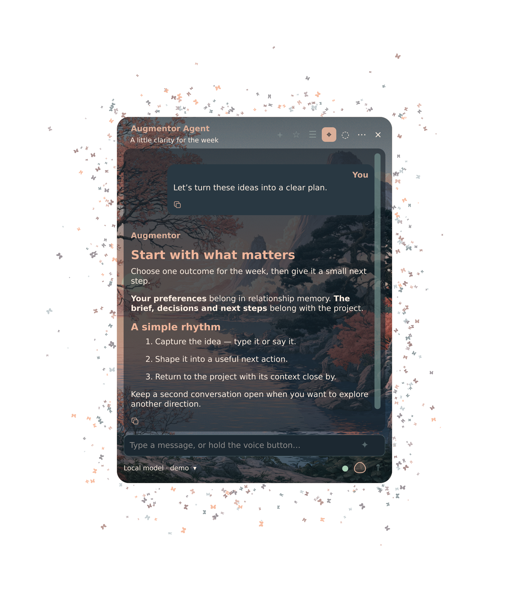
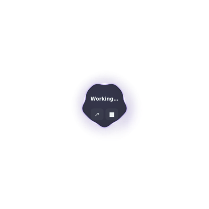

Two interfaces. Your choice of model. Desktop capture uses staged demo content.
ONE MATCHED RELEASE
Download. Set up. Make it yours.
The complete Debian preview installs Desktop, the matching Browser companion, DSH and the required plugins together. Bring your own local or cloud model. The guided installer asks about optional local speech and dual memory.
The 0.2.11 security release fixes a WebSocket memory-exhaustion vulnerability. Current source and issue tracker ↗. Extract the archive and run ./install.sh as your normal user. It verifies its files, requests package installation through sudo, asks for your model connection, and sets up login startup, recovery and a second window. Finish by loading the supplied extension in Chromium. Desktop can be used without loading the extension.
Included recovery: bounded continuation after empty or truncated responses, duplicate-action protection during recovery, and respect for Stop and user handoffs. Model answers still need verification. What changed and release limits ↗
Fresh installations only: existing Augmentor or DSH data is preserved and requires a reviewed migration. This is a Linux preview, with desktop-control qualification scoped to KDE Plasma Wayland. Model weights and credentials are not included.
Other downloads · experimental Fedora and legacy Browser
The Fedora Desktop RPM is an older experimental build with container installation/rendering checks, not the complete voice and memory installer. Fedora guide and download ↗
Browser 0.1.32 contains a known WebSocket vulnerability. Use the matching 0.2.11 complete release; the old archive is retained only for historical reference. Legacy release ↗ · Legacy manual ↗
Platform requirements and what comes next
Your model. Your private setup.
The installer creates new settings, tokens and memory stores on your machine. It includes Model Picker 1.1.2, Adaptive Reasoning 0.2.3 and Resonant Voice 0.1.16, plus the shared prompt, memory and execution-recovery adapters. These are installed together; no separate plugin setup is required. Memory extraction starts paused until you choose to process it. No personal conversations, credentials or microphone recordings are distributed.
Linux now. macOS next.
The complete installer targets Debian 13 amd64. Chromium needs one manual Load unpacked action. macOS compatibility is the next priority, followed by Windows. Pi support follows later. No release dates announced.
BUILT AROUND YOUR AGENCY
Your models. Your workflow.
Local or cloud inference, reusable prompts and clear controls. Augmentor brings the useful parts of your harness into a focused interface.
⌘
One shortcut away.
Choose your Desktop show/hide shortcut. Bring the agent into view, give it a task, and tuck it away again. Keep the compact activity view nearby when you want to follow progress.
◈
Local or cloud. Your choice.
Both editions use your configured DSH models. Run a local model through a compatible endpoint, such as llama.cpp, or choose a cloud provider. Switch models for the task.
⊙
Keep sovereignty practical.
Choose where inference runs. With a local model, prompts can stay on your machine; cloud models send requests to your chosen provider. Connected tools and websites have their own data flows.
▣
Browser + local computer tools.
Desktop provides computer-control tools; the matching Browser edition works in your real Chromium tabs.
Access follows your OS permissions and DSH setup. The 0.2.11 Browser preset is scoped to browser tools and memory recall.⌑
A library for your best prompts.
Save, search and reuse instructions. Bring a useful prompt back into the conversation instead of writing it from scratch each time.
✧
Improve the prompt before sending.
Use AI prompt improvement to turn a rough request into clearer instructions. Review the result and keep control of what you send.
⑂
Keep the conversation moving.
Return to history, copy a response, edit a request or branch a conversation. Keep working from the context you already built.
Features below describe the 0.2.11 complete preview. Voice and memory engines are optional setup choices; availability depends on your model and hardware.
IN YOUR REAL BROWSER
Browser. Your tabs, with an agent.
Augmentor reads and acts on the website while the blue activity veil makes its work visible. Here it is analysing augmentatism.com.
Augmentor Browser analysing augmentatism.com · open the screenshot for full detail
Desktop. One shortcut away.
Choose your show/hide shortcut. Open the conversation when you need it, or keep the compact view visible while the agent works. Try both views below.
DESKTOP / WORKING STATE


SMALLER SURFACE. SAME PRESENCE.
Room for the conversation. Light around the work.
TWO SKINS. YOUR OWN EXPRESSION.
Choose your atmosphere. Or make your own.
Futuristic brings the plasma glow. Blossom lake brings the butterflies. Explore both, or build a new skin in your browser with your own background and colours.
Create your own skin ↗Upload an image, choose colours, preview and download. Import the file in Augmentor’s Colors & skins.
THE LATEST DESKTOP
A voice. A space that feels yours.
Resonant Voice brings recording and speech playback into the conversation. Hold to talk, slide to lock, or choose hands-free mode. The Blossom lake skin adds a moving field of butterflies around the native window.
Actual native app · synthetic demo conversation · silent skin animation. Use the video controls to play; Motion off pauses it.
Resonant Voice
Local speech recognition and expressive speech playback, with an optional speech runtime installed through the guided setup. Microphone and speaker performance need a trial on your machine.
Separate relationship and project memory: continuity about you, and context for the work. The shared adapters are included; local Hindsight setup is optional and starts with empty private stores.
A second conversation, one shortcut away
Keep another agent window open for a separate conversation. On KDE, available defaults are Super+Alt+Space for the main window and Super+Alt+Shift+Space for the second. Your existing shortcuts are kept.
One selected desktop release
Login, the app menu, shortcuts and recovery use the same deployment selection. Updates are staged and checked before selection; running windows show when a newer release is waiting.
Readable code. An interface that fits.
Readable output, quick copying, and an interface you can make comfortable for the way you work.
READ IT. COPY IT. USE IT.
Code has its own space.
Colour makes structure easier to follow. A dedicated copy control keeps the code ready for your next step.
Actual Desktop appearance controls · violet configuration
DSH ADD-ONS · OPTIONAL EXTRAS
Add more to DSH.
The complete preview already includes its required plugins and shared prompt library. Other DSH add-ons can extend your workspace. The older collection below is kept for standalone DSH users; its versions differ from the complete release.
✧
Augmentor
Browser actions and the visible activity veil.
0.2.11 bundle✧
Metafolder
Group projects and sessions into named, coloured folders.
1.2.1✧
Model Picker
Find models, pin favourites and hide those you do not use.
1.1.2✧
Adaptive Reasoning
Tune reasoning effort for configured model routes.
0.2.3 · Preview✧
Prompt Library
Save, search and edit reusable prompts.
0.2.1 · Preview↗
Steering
Apply corrections during model output; running tools finish first.
September 14, 2026 collection · six packages, separate installers and checksums, not an automatic install. Includes two previews. This dated collection contains legacy Browser 0.1.32 and Adaptive Reasoning 0.2.0; it does not include Desktop or the matching 0.2.11 Browser companion. Model and plugin compatibility must be checked against your DSH setup.